117 sites web dans 6 catégories ont été mesurés pour qualifier le niveau de maturité des sites web publics sur la sobriété numérique :
- 29 Villes
- 21 Départements
- 12 Régions
- 18 Agences de l’État
- 16 Ministères
- 17 Métropoles (Mesures ajoutées le 23/03 au sein du classement global)
La méthodologie projection Carbone utilisée :
- Data center : méthode générique OneByte du Shift Project (EqCO2 / Mo)
- Réseau : méthode générique OneByte du Shift Project (EqCO2 / Mo)
- Device utilisateur : méthodologie Greenspector
Mesure de consommation d’énergie (mWh) d’une page sur mobile puis projection en carbone (facteur en EqCO2 / mWh)
Appareil mobile moyenne gamme, navigateur Chrome
Accès 50% Wi-Fi, 50% réseau 4G, luminosité 50%
Conditions figées en 4 étapes : chargement de la page (temps fixé à 20 secondes), inactivité de la page (fixé à 20 secondes), défilement vers le bas ou scroll (fixé à 10 secondes), page en arrière-plan (fixé à 20 secondes). Moyenne de 3 mesures consécutives avec écart-type de moins de 5%.
Les chiffres globaux de l’impact Carbone
L’impact moyen d’une page sur les 100 sites mesurés est de 0,63 g eqCO2 avec des valeurs extrêmes de 0,09 et 2,77 g eqCO2 soit un facteur de x32 entre le meilleur et le pire site. En moyenne, on peut comparer l’impact d’une page web sur un smartphone à l’impact carbone d’un véhicule léger sur 5,6 mètres. Avec des valeurs extrêmes comprises entre 76 cm et 25 mètres d’un véhicule léger moyen. 1 page sur un smartphone = 5.6 mètres en véhicule léger.
Impact Carbone moyen par catégorie pour une page
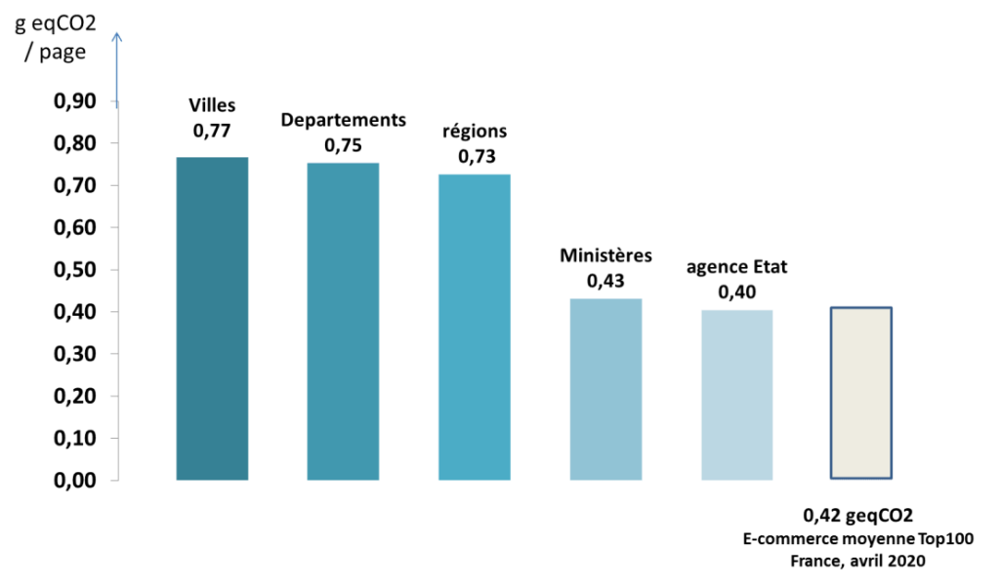
On remarque des écarts significatifs entre les différentes catégories analysées, puisqu’en en moyenne les sites des ministères et des agences sont 50% moins impactantes que celles des villes, départements et régions. La palme revient aux sites des agences de l’état avec 0,4 geqCO2 en moyenne. Agences et Ministères sont au même niveau que les sites e-commerce en terme d’impacts carbone. En moyenne des sites publics (0,56 gEqCO2) les sites publics sont environ 30% plus impactants que les sites e-commerce (0,42 gEqCO2).
Répartition des impacts carbone moyens sur la chaîne
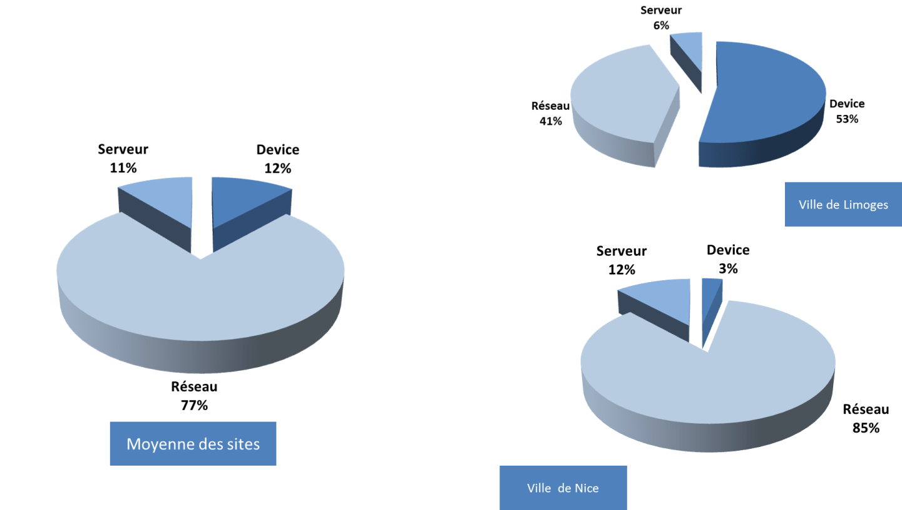
Ces impacts sont concentrés à 77% sur la partie réseau mais avec des différences notables entre les sites web. Certains pouvant consommer jusque plus de la moitié sur la partie device utilisateur.
Répartition des sites selon leur impact Carbone
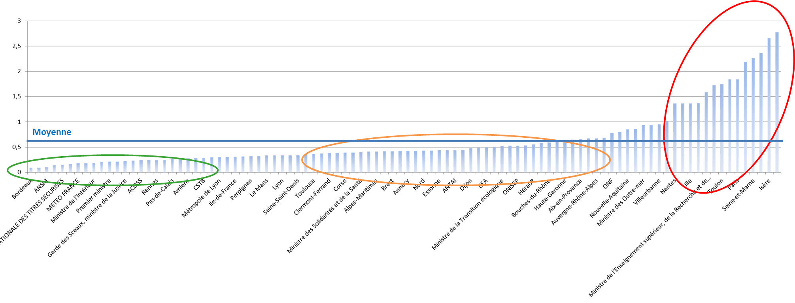
La plupart des sites mesurés ont un impact inférieur ou égal à la moyenne mais quelques 15 % des sites ont un impact plus de 2 fois supérieur à la moyenne. La palme du site le moins impactant revient à la ville de Bordeaux. Voir classement détaillé des 100 sites.
Exemple sur 2 sites
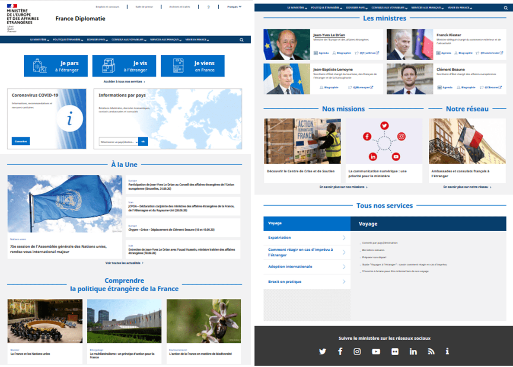
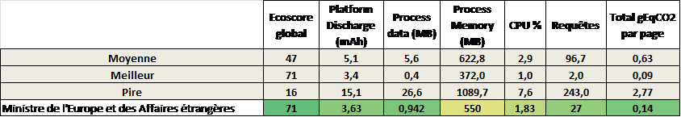
Exemple 1 : Ministère de L’Europe et des Affaires Etrangères – https://www.diplomatie.gouv.fr/
Ce site du Ministère de L’Europe et des Affaires Etrangères obtient le meilleur écoscore et un impact Carbone parmi les meilleurs. Ce site utilise peu de données (moins de 1 Mo) et consomme 30% de moins que la moyenne sur le device mobile de l’utilisateur malgré une richesse fonctionnelle qu’on retrouve sur d’autres sites et des plusieurs contenus riches. L’impact serveur est faible également avec peu de requêtes émises depuis la page (27).
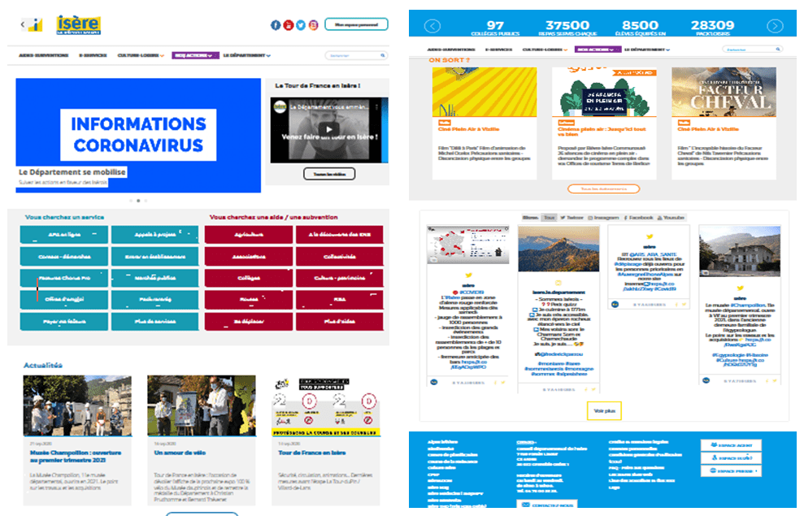
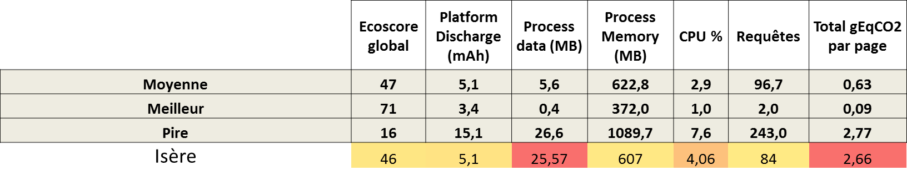
Exemple 2 : Département de l’Isère – https://www.isere.fr/
Ce site du Département de l’Isère obtient un écoscore moyen et un impact Carbone parmi les pires, 4 fois supérieur à la moyenne des 100 sites. Ce site utilise beaucoup de données (plus de 25 Mo). Des échanges de données et des traitements sont aussi réalisés alors que la page est chargée ce qui occasionne une surconsommation d’énergie sur la plateforme, dans la moyenne des sites.
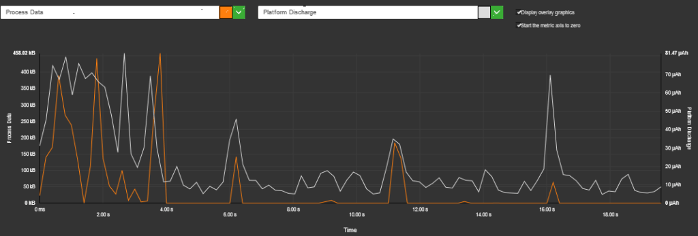
Quantité de données échangées par catégorie
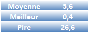
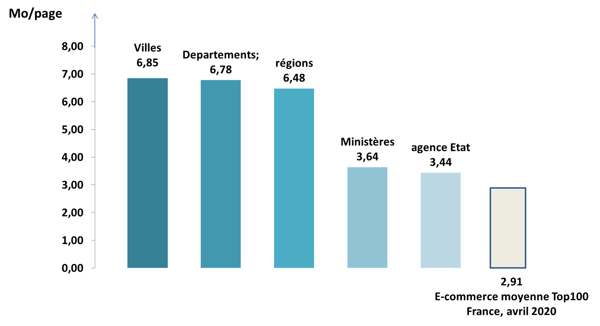
Le chargement des données suffit à expliquer dans les grandes lignes les disparités entre les sites en terme d’impact carbone puisque Ministères (3,64 Mo) et Agences (3,44 Mo) consomment presque moitié moins de données que les villes (6,85 Mo), les départements (6,78 Mo) et régions (6,48 Mo). En moyenne et au global, les sites publics (5,6 Mo) consomment presque 2 fois plus de données que les sites e-commerce (2,91 Mo). Le meilleur site consomme 60 fois moins de données que le plus datavore !
Quantité de requêtes lancées par catégorie
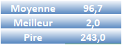
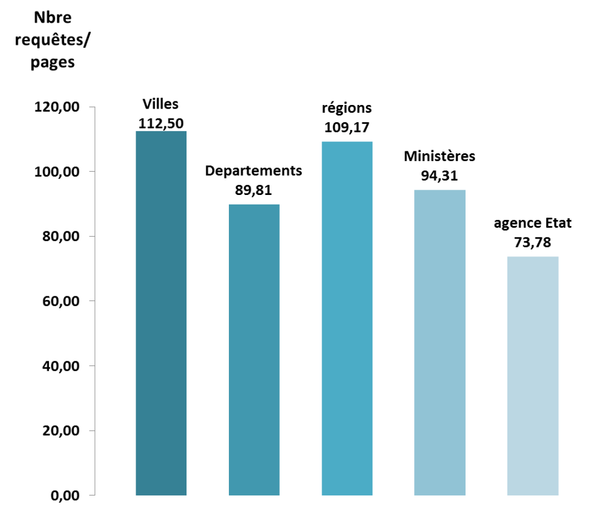
Le nombre de requêtes moyens lances par les pages est élevé à 96,7. Les villes et les régions sont en moyenne 40% plus consommateurs de requêtes que les agences. Les sites les plus gourmands peuvent utiliser jusqu’à 243 requêtes sur une page d’accueil.
Énergie consommée sur le device par catégorie
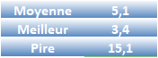
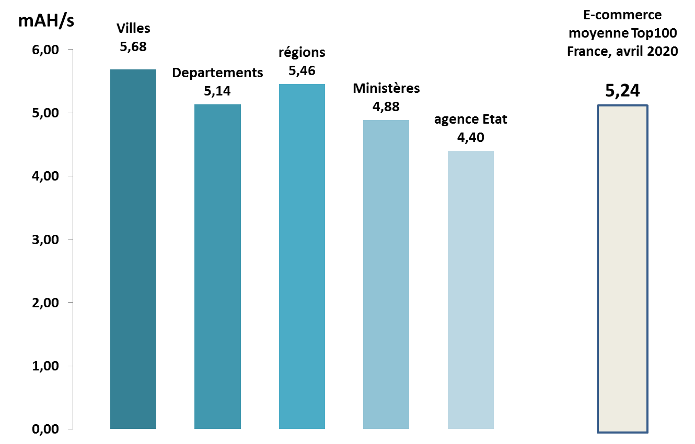
La consommation d’énergie qui agit à la fois sur l’impact carbone de l’utilisateur mais aussi sur son autonomie est très variable également d’un site à l’autre puisqu’il existe un rapport de 1 pour 5 entre les sites les moins énergivores et les plus énergivores. A nouveau les ministères et agences consomment moins d’énergie que les sites des villes notamment. La consommation d’énergie des sites publics (5,1 mAh/s) est comparable à celle des sites e-commerce (5,24 mAh/s)
Mémoire consommée sur le device par catégorie
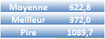
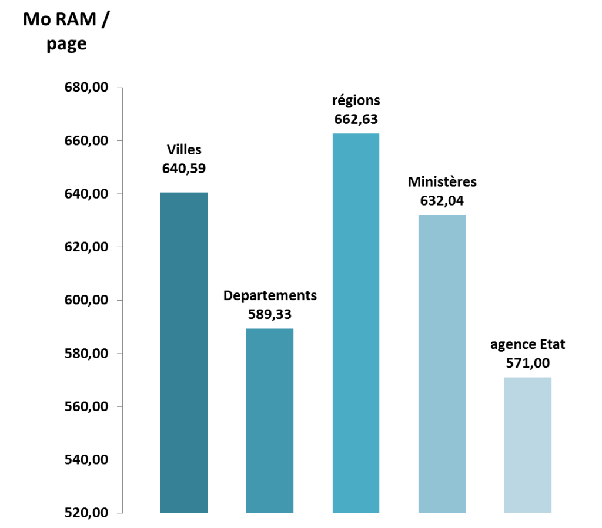
Des grandes différences sur la consommation de mémoire, un rapport de 1 pour 3 existe entre les sites publics. Les agences de l’état consomment 16 % de moins que les régions.
Greenspector Ecoscore par catégorie de site
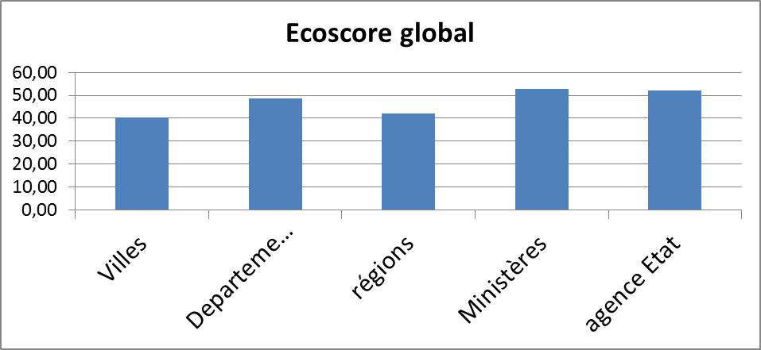
L’Ecoscore de Greenspector qui intègre à la fois des facteurs de mémoire, CPU, Données, énergie et des bonnes pratiques permet d’intégrer des volumétries que nous ne pouvons pas modéliser sous la forme d’impact Carbone (mémoire, …). Les constats sont les mêmes puisque les ministères et agences obtiennent les meilleurs Ecoscores.
Relation Impact Carbone / Ecoscore
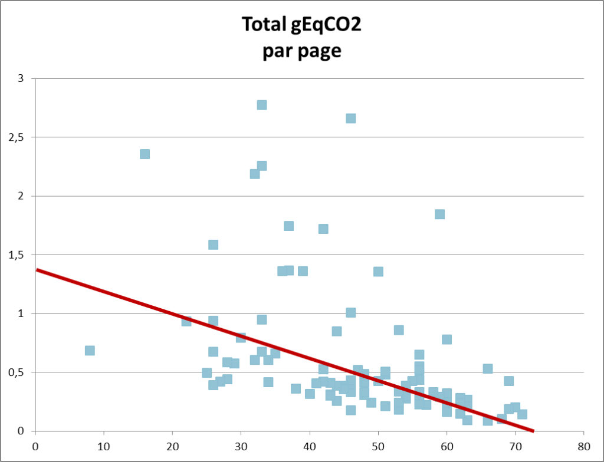
Une corrélation existe entre Impact Carbone et Ecoscore mais quelques valeurs extrêmes portant notamment sur l’impact du transfert des données sortent de cette corrélation.
Classement de l’impact carbone du Top 100 des sites web publiques
| Rang | Nom | ecoscore | Carbon Impact (gEqCO2) | requests | Énergie (mAh) | Données (Mo) | Mémoire (Mo) | Empreinte eau (Litres) | Empreinte sol (m2) |
|---|---|---|---|---|---|---|---|---|---|
| 1 | CIC | 81 | 0,19 | 31 | 2,97 | 1 | 531,87 | 0,03 | 0,34 |
| 2 | Le Blog du Modérateur | 84 | 0,2 | 18 | 3,57 | 1,06 | 605,54 | 0,03 | 0,40 |
| 3 | La Cantine | 80 | 0,22 | 38 | 3,2 | 1,34 | 570,44 | 0,03 | 0,37 |
| 4 | Banque des territoires | 73 | 0,22 | 51 | 2,92 | 1,31 | 669,14 | 0,03 | 0,35 |
| 5 | Whome | 76 | 0,26 | 43 | 3,14 | 3,32 | 661,64 | 0,04 | 0,37 |
| 6 | sfr | 63 | 0,27 | 68 | 3,51 | 1,45 | 674,38 | 0,04 | 0,42 |
| 7 | Chateau des Ducs de Bretagne | 62 | 0,27 | 48 | 3,9 | 1,91 | 757,64 | 0,04 | 0,45 |
| 8 | BNP Paribas | 72 | 0,28 | 77 | 3,12 | 2,11 | 669,86 | 0,04 | 0,39 |
| 9 | Cobage | 67 | 0,31 | 72 | 3,3 | 3,15 | 582,25 | 0,04 | 0,40 |
| 10 | Mismo | 61 | 0,31 | 73 | 3,78 | 2,48 | 864,87 | 0,05 | 0,46 |
| 11 | Enedis | 52 | 0,35 | 57 | 3,5 | 5,91 | 716,59 | 0,05 | 0,42 |
| 12 | Sogetrel | 52 | 0,37 | 103 | 3,47 | 3,76 | 860,64 | 0,05 | 0,44 |
| 13 | Ecosystem | 36 | 0,37 | 52 | 4,93 | 4,33 | 744,72 | 0,05 | 0,57 |
| 14 | _icilundi | 69 | 0,38 | 27 | 3,37 | 9,48 | 661,03 | 0,05 | 0,40 |
| 15 | PALO IT | 61 | 0,39 | 87 | 3,8 | 5,04 | 708,84 | 0,05 | 0,47 |
| 16 | Université de Nantes | 71 | 0,4 | 61 | 3,46 | 8,16 | 650,39 | 0,05 | 0,42 |
| 17 | VIF | 51 | 0,41 | 112 | 3,79 | 4,41 | 826,63 | 0,05 | 0,48 |
| 18 | La Box Loire Atlantique | 63 | 0,47 | 91 | 3,74 | 8,63 | 650,42 | 0,06 | 0,47 |
| 19 | Radio Prun' | 50 | 0,48 | 44 | 3,56 | 12,92 | 712,56 | 0,05 | 0,43 |
| 20 | Maison Europe | 58 | 0,55 | 149 | 4 | 8,09 | 695,45 | 0,07 | 0,53 |
| 21 | Isefac Bachelor | 41 | 0,6 | 181 | 3,82 | 8,4 | 915,64 | 0,07 | 0,53 |
| 22 | Accenture | 35 | 0,61 | 63 | 6,92 | 11,29 | 647,93 | 0,08 | 0,80 |
| 23 | Tele Nantes | 48 | 0,8 | 146 | 3,43 | 21,39 | 821,12 | 0,08 | 0,48 |
| 24 | Groupe Onepoint | 57 | 1,11 | 84 | 3,36 | 40,15 | 744,13 | 0,10 | 0,47 |
| 25 | Saint Nazaire Tourisme | 47 | 1,5 | 70 | 4,16 | 58,42 | 761,91 | 0,13 | 0,57 |
Vous souhaitez accéder au détail de votre mesure ? Votre site n’est pas dans ce classement ? Contactez-nous pour réaliser une mesure, apparaître dans ce classement ou connaître le détail de consommation de votre site web.
Je souhaite ajouter mon site web !